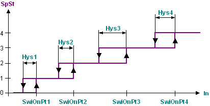
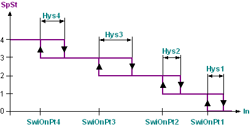
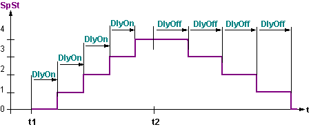

CONT_4ST：4级步进开关
CONT_4ST (FB418) 块根据模拟输入值确定多级聚合的最终切换级。
有四个开启阈值和四个迟滞。
功能性
该块根据模拟值 [In] 确定请求的“设定点阶段”[SpSt]。
如果控制动作方向is direct ([Actg] = 0 (Direct))，需要更高的级来增加输入值[In]。然后按以下顺序对开启阈值进行参数化：[SwiOnPt1] < [SwiOnPt2] < [SwiOnPt3] < [SwiOnPt4]。
如果 [In] ≥ [SwiOnPt1]，则请求的“设定点阶段”[SpSt] 为 1。如果 [In] ≥ [SwiOnPt2] 等，则阶段为 2。仅当 [In] 低于开启点 [SwiOnPt1]...[SwiOnPt4] - 迟滞 [Hys1]...[Hys4] 时，才会重置步骤。如果未维持这些顺序，则块会相应地对接通点进行排序。
如果控制动作方向is reversed ([Actg] = 1 (Reverse))，需要较低的级来增加输入值[In]。然后按以下顺序对接通点进行参数化：[SwiOnPt4] < [SwiOnPt3] < [SwiOnPt2] < [SwiOnPt1]。
如果 [In] ≤ [SwiOnPt1]，则请求的“设定点阶段”[SpSt] 为 1。如果 [In]≤[SwiOnPt2] 等，则阶段为 2。仅当 [In] 高于接通点 [SwiOnPt1]...[SwiOnPt4] - 迟滞 [Hys1]...[Hys4] 时，才会重置步骤。如果未维持这些顺序，则块会相应地对接通点进行排序。
偏移量 [Ofs] 允许向 [SpSt] 添加附加值。
延迟打开和关闭（[DlyOn]、[DlyOff]）。为每个阶段设置开启或关闭延迟。 Only one stage can be switched on or off at a time.
此外，每个阶段的最小运行时间 [TiRnMin] 和每个阶段的最小暂停时间 [TiOffMin] 可以参数化。这些时间使该级在打开后至少运行指定的时间或关闭至少指定的时间。
如果输出达到最高级（包括接通延迟和最小暂停时间），则输出 [ReqHi] = 1（是）。
如果模块完全复位（通过包括关闭延迟和最短开启时间），则输出 [ReqLo] = 1（是）。
通过 [EnFnct] = 0（否）可以完全禁用块功能。当 [EnFnct] = 0（否）时，无论可能启动的最小运行时间如何，输出 [SpSt] 和所有时间都会重置。当[EnFnct] = 1（是）时，该功能启用。
[EnHi] = 1（是）启用升压。
[EnLo] = 1（是）启用降压。
[EnFnct] = 1（是）时输出控制 [SpSt]。
本表未考虑开启和关闭延迟以及最短时间；它们优先于 [In] 的控制，即只有在时间到期后才会发生转换。
表中的指示“负载”表示块输出保持在输入值进入此范围之前设置的值。
Response for [Actg] = 0 (Direct).
IF In ≥ SwiOnPt4 | 输出 = 4 + Ofs |
ELSEIF In ≥ SwiOnPt4 – Hys4 AND Last = 4 | 输出 = 4 + Ofs |
ELSEIF In ≥ SwiOnPt3 | 输出 = 3 + Ofs |
ELSEIF In ≥ SwiOnPt3 – Hys3 AND Last = 3 | 输出 = 3 + Ofs |
ELSEIF In ≥ SwiOnPt2 | 输出 = 2 + Ofs |
ELSEIF In ≥ SwiOnPt2 – Hys2 AND Last = 2 | 输出 = 2 + Ofs |
ELSEIF In ≥ SwiOnPt1 | 输出 = 1 + Ofs |
ELSEIF In ≥ SwiOnPt1 – Hys1 AND Last = 1 | 输出 = 1 + Ofs |
ELSE | 输出 = 0 + Ofs |
END | --- |
Response for [Actg] = 1 (Reverse).
IF In ≤ SwiOnPt4 | 输出 = 4 + Ofs |
ELSEIF In ≤ SwiOnPt4 + Hys4 AND Last = 4 | 输出 = 4 + Ofs |
ELSEIF In ≤ SwiOnPt3 | 输出 = 3 + Ofs |
ELSEIF In ≤ SwiOnPt3 – Hys3 AND Last = 3 | 输出 = 3 + Ofs |
ELSEIF In ≤ SwiOnPt2 | 输出 = 2 + Ofs |
ELSEIF In ≤ SwiOnPt2 – Hys2 AND Last = 2 | 输出 = 2 + Ofs |
ELSEIF In ≤ SwiOnPt1 | 输出 = 1 + Ofs |
ELSEIF In ≤ SwiOnPt1 – Hys1 AND Last = 1 | 输出 = 1 + Ofs |
ELSE | 输出 = 0 + Ofs |
END | --- |
如果四个可能的阶段或聚合不够，可以按顺序切换几个 CONT_4ST 块。在这种情况下，延迟时间可用于每个单独的块（例如，两个独立的 4 级电加热线圈）或多个块（例如，8 级加热线圈）。
图表
图 1：[Actg] = 0（直接）和 [Ofs] = 0 的示例。

图 2：[Actg] = 1（反向）且 [Ofs] = 0 的示例。

图 3：输入和输出延迟的时间响应。
在 t1 时，[In] 从 ≤[SwiOnPt1] 移动到 [SwiOnPt4]。
在 t2 时，[In] 从 [SwiOnPt4] 移动到 ≤ [SwiOnPt1] - [Hys1]。

输入
Pin | E | Description |
EnFnct | p | 启用功能。 1（是）：该功能已启用。 0（否）：该功能被禁用。 |
In | pa | 输入。 用于导出开关状态的值。 |
SwiOnPt1 | pa | 接通点 1. 第 1 阶段开启的开关阈值。 |
Hys1 | pa | 迟滞 1. 第 1 阶段的迟滞。 |
SwiOnPt2..4 | pa | 开关点 2..4。 阶段 2..4 开启的开关阈值。 |
Hys2..4 | pa | 迟滞 2..4。 阶段 2..4 的滞后。 |
Actg | pa | 控制动作方向 0（直接）：输入信号增加时切换。 1（反向）：输入信号增加时关闭。 |
DlyOn | pa | 开启延迟。 发出阶段请求后，直到阶段真正切换的等待时间。 |
DlyOff | pa | 关闭延迟。 发出阶段请求重置后，直到阶段实际关闭为止的等待时间。 |
TiRnMin | pa | 最短运行时间。 启用阶段必须打开的最短时间。 |
TiOffMin | pa | 最短关闭时间。 必须关闭禁用阶段的最短时间。 |
EnHi | pa | 启用升压。 1（是）：（默认值）。 |
EnLo | pa | 启用降压。 1（是）：（默认值）。 |
Ofs | pa | 抵消。 添加到输出 [SpSt] 的固定值。 |
NumSts | pa | 阶段数。 可能的阶段数或可切换聚合的数量。 必须对可能的开关级数进行参数化。 |
输出
Pin | E | Description |
SpSt | a | 设定点阶段。 切换多步聚合所需的阶段为整数。 |
ReqHi | a | 要求更高。 最高可能的切换阶段或最后达到的聚合。 |
ReqLo | a | 要求低一些。 达到关闭阶段或关闭所有聚合。 |
输入值
Pin | Description | Data type | Default value | E.g. Engineering unit or Text group | Min. | Max. |
EnFnct | 启用功能。 | 布尔值 | 1（是） | 不，是 |
|
|
In | 输入。 | 真实的 | 0.0 |
| -3.403E38 | 3.403E38 |
SwiOnPt1..SwiOnPt4 | 接通点 1..4。 | 真实的 | 0.0 |
| -3.403E38 | 3.403E38 |
Hys1..Hys4 | 迟滞 1..4。 | 真实的 | 0.0 |
| -3.403E38 | 3.403E38 |
Actg | 控制动作方向 | 布尔值 | 1（反向） | 正向、反向 |
|
|
DlyOn | 开启延迟。 | 时间 | 0ms | T#0d_0h_0m_0s_0ms |
|
|
DlyOff | 关闭延迟。 | 时间 | 1m_40s | T#0d_0h_0m_0s_0ms |
|
|
TiRnMin | 最短运行时间。 | 时间 | 1m_40s | T#0d_0h_0m_0s_0ms |
|
|
TiOffMin | 最短关闭时间。 | 时间 | 0ms | T#0d_0h_0m_0s_0ms |
|
|
EnHi | 启用升压。 | 布尔值 | 1（是） | 不，是 |
|
|
EnLo | 启用降压。 | 布尔值 | 1（是） | 不，是 |
|
|
Ofs | 抵消。 | 整数 | 0 |
| 0 | 8 |
NumSts | 阶段数。 | 整数 | 4 |
| 0 | 4 |
输出值
Pin | Description | Data type | Default value | E.g. Engineering unit or Text group | Min. | Max. |
SpSt | 设定点阶段。 | 整数 | 0 |
| -32768 | 32767 |
ReqHi | 要求更高。 | 布尔值 | 0（否） | 不，是 |
|
|
ReqLo | 要求低一些。 | 布尔值 | 0（否） | 不，是 |
|
|
运行模式。
EnFnct | Description |
1（是） | 输出按照描述进行切换。 |
0（否） | 输出被关闭并且时间被重置。 |
使用
该块可以根据多个切换步骤中的模拟值来切换聚合。这些步骤例如多级加热线圈作为温度控制执行器或多级风扇，取决于空气质量传感器。
过程响应
启动期间，所有时间都会重新启动。如果输入值 [In] 请求较高级，则较低级将按图 3 所示的顺序运行。然后根据输入处的值处理该块。根据处理顺序，这些值要么表示由先前启用的块计算的输出值，要么表示该块的特定于实例的默认值。
故障排除
标准（参见General rules and information).